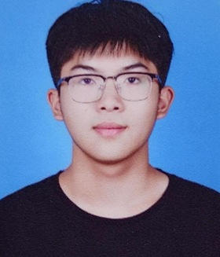

北京交通大学 211（已保研） 软件工程 · 本科
- 成绩排名：10/188（5.3%） GPA：3.68/4
- 英语能力：CET4: 589 CET6: 529
- 专业课程：计算机网络、操作系统、机器学习、人工智能、算法设计与分析
- 2024-2025北京市级大学生创新创业训练项目 国家自然科学基金项目
- 第十四届MathorCup数学建模挑战赛全国二等奖
- 学习优秀奖学金，社会工作奖学金，校级优秀共青团干部，校级优秀共青团员
PERSONAL ARCHIVE · 2026
记录实践、思考与正在发生的创造。
移动指针 · 感知信号
SELECTED OUTPUTS
从问题、过程到结果。每个项目都是一次清晰的思考记录。
ABOUT THE PERSON
我是余旺。我关注工具、体验与信息之间的关系，也享受把模糊的想法一步步变成可使用的成果。
这里是我的个人档案。随着新的项目完成，它会继续生长。
CURRICULUM VITAE

多模态图像融合与检测系统：提出了一个基于双层次优化的目标感知双对抗学习框架，通过一个生成器和两个分别关注红外目标与可见光细节的判别器，实现检测导向的红外-可见光图像融合。在融合效果方面，融合质量指标较优，在目标检测方面，我们使用YOLOv5和FCOS作为检测器，评估了融合图像对检测性能的提升，我们的方法在mAP@0.5上达到了70%以上。
深耕算法研究1年以上，发表论文2篇(含在投)及专利1项，主攻深度学习、强化学习优化(DTSAT-DRQN混沌加密)与小样本学习(Sia-RSNet人体识别)，熟练运用Transformer、self-Attention等技术解决动态建模问题。
UTILITY LAB
四个工具均在浏览器本地运行；输入内容不会上传，也不会被保存。
OPEN CHANNEL
联系方式将在内容确认后开放。